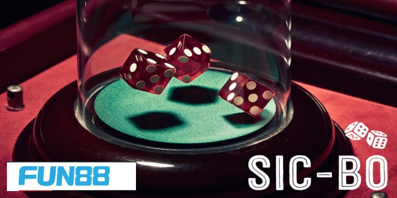

Sicbo Fun88 Và Những Lưu Ý Xương Máu Cho Anh Em
Sic Bo Online Tại Fun88: Xúc Xắc Và Cược May Mắn
Sic Bo Fun88 đem đến cho anh em cơ hội tuyệt vời để giải trí và kiếm thêm thu nhập. Với lối chơi đơn giản, ai cũng có thể tham gia khám phá trải nghiệm tựa game. Nếu như bet thủ muốn tìm hiểu về trò chơi thi hãy đọc thông tin giới thiệu trong bài viết bên dưới đây nhé.
Tổng quan về game Sic Bo Fun88
Sicbo là trò chơi có nguồn gốc xuất phát từ người anh em láng giềng của chúng ta – Trung Quốc. Nhờ vào sự phát triển của công nghệ hiện đại, hình thức online phát triển và được mọi người biết đến rộng rãi hơn. Nhà cái Fun88 nhanh chóng cập nhật sản phẩm để cược thủ có thể trải nghiệm.
Sic Bo Fun88 giúp mọi người có thể thuận tiện hơn trong quá trình cá cược. Không còn cần phải di chuyển quá xa, game thủ có thể chơi ngay chính tại nhà của mình thông qua các thiết bị di động. Do đó mà bộ môn ngày càng phổ biến hơn trên toàn thế giới.
Giới thiệu những thông tin tổng quan về trò chơi Sicbo
Nhiệm vụ của bet thủ khi tham gia vào tựa game chính là dự đoán kết quả liên quan đến các viên xúc xắc. Trường hợp mọi người đưa ra được quyết định chính xác thì sẽ được nhà cái Fun88 trả thưởng cực giá trị. Hiện nay, mức tỷ lệ ăn của nhà cái được đánh giá là vô cùng cạnh tranh.
Hệ thống kèo cược trong trò chơi Sic Bo
Anh em sẽ có nhiều sự lựa chọn đặt cược khi tham gia vào Sic Bo Fun88. Mọi người phải đảm bảo hiểu hết về các cửa để có thể khám phá bộ môn một cách suôn sẻ nhất.
Kèo lớn – nhỏ
Hình thức cược tài xỉu được nhiều anh em ưa chuộng bởi sự đơn giản, dễ hiểu. Người chơi mới cũng có thể nắm bắt được quy tắc của kèo. Bet thủ sẽ đưa ra dự đoán liên quan đến tổng kết quả của 3 viên xí ngầu:
Cược số
Khi chơi Sic Bo Fun88 mọi người sẽ thấy ô đặt cược số. Đây là hình thức dự đoán chính xác tổng các mặt của 3 viên xúc xắc. Nhà cái cung cấp tỷ lệ ăn cao nhưng anh em không nên mạo hiểm bởi tỷ lệ rủi ro cũng rất lớn. Bet thủ khó có thể đưa ra được lựa chọn chính xác.

Hệ thống kèo cược đa dạng mà nhà cái Fun88 cung cấp
Kèo chẵn lẻ
Khi chơi Sicbo tại nhà cái Fun88, nhiều anh em cũng lựa chọn kèo chẵn lẻ để tham gia. Bởi xác suất để chiến thắng lên đến 50%. Do đó nhiều game thủ tận dụng cơ hội để kiếm thêm thu nhập cho mình.
Nhiệm vụ của người chơi khi tham gia vào kèo chính là dự đoán tổng của 3 viên xúc xắc là số chẵn hay lẻ. Chỉ cần có sự may mắn cùng những kỹ năng hay ho là anh em có thể giành được chiến thắng.
Chia sẻ bí quyết chơi Sic Bo Fun88 hiệu quả nhất
Trò chơi Sicbo dựa vào sự may mắn của anh em cược thủ. Tuy nhiên nếu mọi người sở hữu thêm nhiều bí quyết thì việc giành chiến thắng cũng sẽ dễ dàng hơn. Chính vì vậy chuyên mục bên dưới đây sẽ chia sẻ kỹ năng của những lão làng:
Chiến thuật chơi gấp thếp
Kinh nghiệm chơi Sic Bo Fun88 mà mọi người có thể sử dụng chính là chiến thuật gấp thếp. Cách này đem đến phần thưởng lớn, giúp gỡ lỗ hiệu quả:
Phương pháp gấp thếp được chuyên gia khuyến khích sử dụng với những người có nguồn tài chính mạnh. Bởi mỗi lần nhân đôi vốn cược đòi hỏi số tiền cực khủng. Bet thủ cần cân nhắc trước khi quyết định có nên theo chiến thuật này hay không.
Soi cầu trên lịch sử cược
Tại nhà cái Fun88 sẽ cung cấp kết quả của các ván trước đó. Anh em có thể dựa vào dữ liệu này để đưa ra được phán đoán cho mình. Đôi lúc cầu chạy sẽ theo một quy luật nhất định. Nếu như cược thủ nhìn ra sẽ chiến thắng cực lớn:
Giữ vững tâm lý
Yếu tố tâm lý cũng rất quan trọng khi chơi Sicbo tại nhà cái Fun88. Bởi chỉ khi có tâm trạng ổn định, game thủ mới đưa ra được những dự đoán chính xác, quyết định thông minh. Nếu như cảm xúc đang nóng giận, buồn bã,… thì hội viên nên nghỉ ngơi.
Bet thủ cần học hỏi nhiều bí quyết chơi Sic Bo Fun88
Sic Bo Fun88 được bài viết bên trên giới thiệu thông tin chi tiết nhất. Anh em cần phải nắm được hệ thống kèo cược mà nhà cái cung cấp. Đồng thời mọi người đừng bỏ qua chiến thuật chơi hay ho từ lão làng để gặt hái thành công.